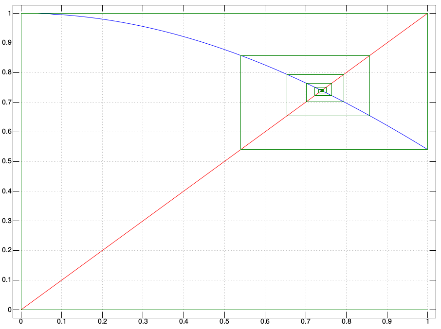
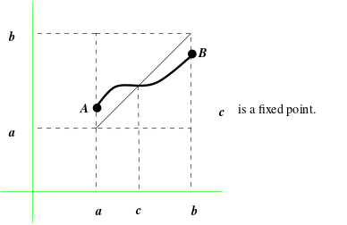
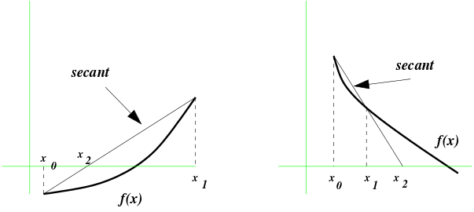
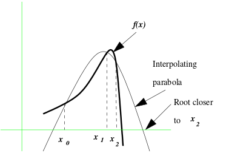
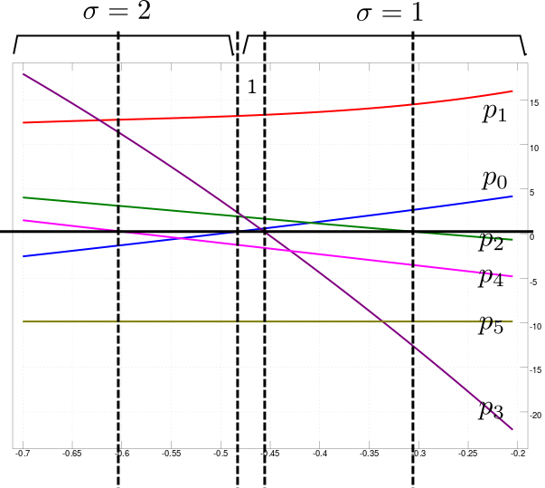
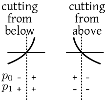

A value $a$ is called a fixed point of a function $f(x)$ if
$f(a) = a.$ Finding the fixed point of $f(x)$ is the same as
finding a zero of $f(x)-x.$ One simple way to compute a fixed point
of $f(x)$ is to start with some initial guess $x_0$ and then to
iterate
$$
x_{k+1} = f(x_k).
$$
However, this is not guaranteed to converge.
EXAMPLE:
Let us try to solve the equation
$$
x = \cos(x).
$$
We start with the initial guess
$x_0=1.$
Here are the values of a few iteration:
It is instructive to see the iterations graphically. A fixed
point of $f(x)$ means a point where the graph of $f(x)$
meets the $y=x$ line. The fixed point iterations above may
be visualised as the following "cobweb diagram" (the blue line is
the graph of $\cos x,$ the red diagonal is the $y=x$
line).

Cobweb Diagram
The following code snippet produces this.
fp1=: (],f),:(f,f)
fp=: ],fp1 @ {. @ {:
f=: cos
x=: (i.100) % 99
plot x ; f x
pd x ; x
pd ;/ |: fp^:20 (1 2 $ 1 0)
pd'show'
The next example shows a case where the fixed point iteration does not
converge.
EXAMPLE:
Let us apply the fixed point iteration to solve $x = f(x)=x^2.$ If we
start from $|x_0|>1,$ the sequence $\{x_k\}$ defined by
$$
x_k = x_{k-1}^2
$$
diverges to infinity. If, however, $|x_0|< 1$ then the sequence
converges to the fixed point $0.$ To converge to the fixed point 1,
you need to start with $x_0=\pm1.$
Notice that the iteration $x_{k+1} = f(x_k)$ does not make sense if
$f(x_k)$ falls outside the domain of $f,$ since then we cannot
compute $x_{k+2} = f(x_{k+1})$ in the next step. So we need to make
the following assumptions:
There is an interval $[a,b]$ such that $f(x)$ maps $[a,b]
$ into $[a,b],$
$f(x)$ is continuous over $[a,b]$
$x_0\in[a,b].$
Proof:
If $f(a)=a$ or $f(b)=b,$ we are done. Otherwise,
$f(a)?a$ and $f(b)< b.$ Let the points $(a,f(a))$ and
$(b,f(b))$ be denoted by $A$ and $B,$ respectively. Then
the graph of $f(x)$ is a continuous curve from $A$ to $B,$
and hence it must intersect the diagonal at least once. Any such
intersection is a fixed point of $f(x).$

A continuous curve from $A$ to $B$ must cross the diagonal
[QED]
The following theorem gives a sufficient condition for the fixed point
iteration to converge.
Proof:
We already know that $f(x)$ has at least one fixed point in
$[a,b].$ Let it have at least two fixed points $\xi$ and
$\eta$ in $[a,b],$ if possible. Define $g(x) = f(x)-x.$
Then $g(\xi) = g(\eta)=0.$ So, by Rolle's theorem, $g'$ must
vanish for some point $\theta$ in $(\xi,\eta).$ Hence,
$$
g'(\theta) = f'(\theta)-1=0,
$$
which is impossible since $|f'(x)| < 1$ for all $x\in[a,b].$
This proves that $f(x)$ has exactly one fixed point in $[a,b].$
Let this unique fixed point be denoted by $\xi.$
We want to show that $x_n\rightarrow \xi$ as $n\rightarrow\infty.$
Define $e_n = x_n-\xi.$
Then
$$\begin{eqnarray*}
e_{n+1} & = & x_{n+1}-\xi\\
& = & f(x_n)-f(\xi)\\
& = & f'(\lambda)(x_n-\xi),
\end{eqnarray*}$$
for some $\lambda$ between $x_n$ and $\xi,$ by the mean
value theorem. Thus,
$$
e_{n+1} = f'(\lambda) e_n\leq K|e_n|.
$$
Using this repeatedly,
$$
|e_n| \leq K^n |e_0| \rightarrow 0 \mbox{ as } n\rightarrow\infty,
$$
completing the proof.
[QED]
Here we shall take a second look at numerical methods to solve
equations of the form
$$
f(x)=0,
$$
that we cannot easily solve analytically.
A typical numerical method (like the Newton-Raphson method) is iterative in nature, i.e., it generates
a sequence $x_0,x_1,x_2,...$ that (hopefully) converges to a
root of the equation. In the first part of the course, we have
deliberately avoided the question: How to check for convergence?
We have just used the naive approach of stopping whenever two
successive iterates are "close enough". Here we provide a longer list:
We can stop if $|f(x_n)|< \eta,$ where $\eta$ is
a prespecified tolerance in the $f$-space.
Often we use the stopping criterion
$|x_n-x_{n-1}|< \epsilon,$ where $\epsilon $
is a prespecified tolerance in the $x$-space. This is very
popular because it is easy to compute. This is what we have been
using so far. While it often works well in practice, it is really not a
guarantee that $x_n$ is near the true root $\xi$ or $f(x_n)$ is near
0. If you are using this stopping criterion then it is a wise thing to
separately check that $f(x_n)$ is indeed close to zero.
Usually, it is better to use the criterion $|[|
\frac{x_n-x_{n-1}}{x_{n-1}} |]| < \epsilon,$
where $\epsilon $ is some specified relative tolerance.
We must keep a provision to deal with divergent (or very slowly
convergent) sequences. So we must stop if $n\geq n_{max},$ where
$n_{max}$ is some prespecified maximum number of iteration. If this
number is reached, we should output a ``No convergence''
message.
Thus, a typical iterative algorithm to solve $f(x)=0$ may need three
convergence checking inputs from the user: $\epsilon, \eta$ and
$n_{max}.$ Of these, $n_{max}$ and at least one of
$\epsilon$ and $\eta$ must be present.
Always treat iterative method outputs with suspicion! The
reason is simple:
The convergence behaviour of an infinite
sequence is not affected by only finitely many terms. Yet a
computer can check only finitely many terms to determine convergence.
The
following example is meant to scare you.
EXAMPLE:
A foolish guy is trying to find the sum $\sum_1^\infty
\frac 1n.$ He is using the iterative method:
$$
s_n = s_{n-1} + \frac 1n\mbox{ for } n\in{\mathbb N}
$$
starting with $s_0 = 0.$ He is using $\epsilon =
0.000001.$ What is the result?
SOLUTION:
He tests $|s_n-s_{n-1}| < \epsilon,$ i.e., $\frac 1n <
\epsilon,$ which occurs for $n=1+10^7.$
So this fellow will find a finite limit of this divergent
sequence.
+/% 1+i.1+1e7
The answer is 16.6953. Wow!
Before you lose all faith in iterative methods, however, do please try
the next exercise:
EXERCISE:
We know $\sum\frac{1}{n^2} = \frac{\pi^2}{6}.$ Use the iteration
$$
s_n = s_{n-1} + \frac{1}{n^2}\mbox{ for } n\in{\mathbb N}
$$
starting with $s_0 = 0.$ Use the same $\epsilon $ as
before. How close are you getting to $\frac{\pi^2}{6}$
So far we have seen that fixed point iteration converges under certain
conditions. The next question is `How fast does it converge?' To quantify
rate of convergence we need the following definition.
The assumption that $e_n$'s are all nonzero is actually a trivial
one, since if $e_n=0$ for some $n$ then $e_k=0$ for
all $k\geq n.$ In this case we have exactly found the answer, and so we
shall not care about the rate of convergence.
Proof:
It is easy to see that
$$
\lim_{n\rightarrow\infty}\left|\frac{e_n}{e_{n-1}}\right| = |f'(\xi)|.
$$
[QED]
Proof:
We have for some $\lambda_n$ between $\xi$
and $x_n,$
$$\begin{eqnarray*}
f(x_n)
& =& f(\xi) + f'(\xi)(x_n-\xi) + \frac{f''(\lambda_n)}{2!}(x_n-\xi)^2\\
& =& f(\xi)+ \frac{f''(\lambda_n)}{2!}(x_n-\xi)^2.
\end{eqnarray*}$$
So
$$
e_{n+1} = x_{n+1}-\xi = f(x_n)-f(\xi) = \frac{f''(\lambda_n)}{2!}e_n^2.
$$
Taking limit as $n\rightarrow\infty$ and using the continuity
of $f''$ we have
$$
\left|\frac{e_{n+1}}{e_n^2}\right| \rightarrow \frac{f''(\xi)}{2}
$$
completing the proof.
[QED]
To solve $g(x)=0,$ the Newton-Raphson iteration is
$$
x_{n+1} = x_n-\frac{g(x_n)}{g'(x_n)}.
$$
This is a fixed point iteration $x_{n+1} = f(x_n),$ where
$$
f(x) = x-\frac{g(x)}{g'(x)}.
$$
Let $\xi$ be a zero of $g(x)$ where the iteration
converges. Assume that $g'(\xi)\neq0.$ Then
$$
f'(\xi) = 1-\frac{(g'(\xi))^2-g(\xi)g''(\xi)}{(g'(\xi))^2} = 0.
$$
However, if $g'(\xi)=0,$ then the Newton-Raphson iteration converges
only linearly.
We have learned about the Newton-Raphson and bisection methods in
the first part of the course. The Newton-Raphson method converges
fast, but requires the derivative. The bisection method converges
slowly, does not require the derivative to exist (needs only
continuity), and requires two initial points, $x_0$
and $x_1,$ suchthat $f(x_0)$ and $f(x_1)$ have
opposite signs.
It is possible to merge these two methods into a single method
that tries to balance to the good properties of both, while
avoiding their disdvantages. The method has two variants: you
call it Regula Falsi when you consider as a faster alternative to
the bisection method, and call it the secant method when you
consider at a derivative-free version of the Newton-Raphson method.
This method is a close kin of the bisection method. Here also we start
with an interval $(l_0,r_0)$ such that $f(l_0)$ and
$f(r_0)$ have opposite signs. However, unlike the bisection method,
here we define $m_k$ as the value of $x$ where the line joining
$(l_k,f(l_k))$ and $(r_k,f(r_k))$ intersects the $x$-axis.
Here we shall approximate $f(x)$ locally using a straight
line. Suppose that we know that $f(x_0)=y_0$ and $f(x_1)=y_1.$
We shall join the points $(x_0,y_0)$ and $(x_1,y_1)$ with a
straight line and see where it hits the $x$-axis. The value of
$x$ where the line hits the $x$-axis will be called $x_2.$
In general, if $L_i$ denotes the straight line joining
$(x_{i-1},y_{i-1})$ and $(x_{i},y_{i})$ then $x_{i+1}$ is
defined as the value of $x$ where $L_i$ hits the
$x$-axis. (If $L_i$ happens to be parallel to the $x$-axis,
the algorithm stops with the message ``Failure.'')

Secant method
We proceed like this until convergence.
EXAMPLE:
Let us apply this method to solve $\cos(x)=x.$ We shall take
$x_0=0$ and $x_1 = 0.5.$
Finding the roots of a polynomial is important in different branches of
science. It is a special case of solving nonlinear equations. However, it
has one difference from the functions discussed so far, namely, a
polynomial may have complex roots. We shall first see how we can apply
Newton-Raphson method to find a real root of a polynomial starting from an
initial approximation. Later we shall attack the problem of finding
complex roots of polynomials.
Let $f(x)$ be the polynomial whose root we want to find. Let
$x_0$ be an initial approximation to the root. Then the
Newton-Raphson iteration is
$$
x_{n+1} = x_n - \frac{f(x_n)}{f'(x_n)}.
$$
This is just the general Newton-Raphson iteration, nothing special about
polynomials. The fact that $f(x)$ is a polynomial makes the
computation of $f'(x)$ simple, as we show next.
Suppose that $f(x) = a_0+a_1x+a_2x^2+\cdots+a_nx^n.$ Then
Horner's method is to to compute it in a nested form, so that we
do not have to compute each power of $x$ from scratch (e.g.,
if we have already computed $x^2$, we can compute $x^3$
as $x^2\times x,$ instead of $x\times x\times x$). Here
is an example.
EXAMPLE:
Express $1+3x-4x^2+10x^3$ in Horner's form.
SOLUTION:
$1+x(3+x(-4+x(10))).$
The general scheme to compute $f(x) =
a_0+a_1x+a_2x^2+\cdots+a_nx^n$ is
$$\begin{eqnarray*}
b_n & = & a_n\\
b_i & = & a_i + b_{i+1}x \quad\mbox{ for } i=n-1,...,0.
\end{eqnarray*}$$
The required value of the polynomial is $b_0.$
We can use Horner's method to differentiate a
polynomial $f(x),$ because $f'(x)$ is
again a polynomial. So we can compute it by Horner's method:
$$\begin{eqnarray*}
c_{n-1} & = & na_n\\
c_i & = & ia_i + c_{i+1}x \quad \mbox{ for } i=n-2,...,0.
\end{eqnarray*}$$
At the end of the iteration $c_0$ stores the required value of
$f'(x).$
Suppose that we have found one zero, $\alpha,$ of a polynomial, $f(x).$
Then $(x-\alpha)$ is a factor of $f(x).$
To find the other roots of the polynomial we need to divide $f(x)$ by
$(x-\alpha)$ to get a polynomial of degree one less than that of
$f(x).$
This is called deflating the polynomial by
$\alpha.$ The $b_i$'s of Horner's method can be used to compute
the deflated polynomial. The following theorem is the key to this method.
Proof:Direct computation.[QED]
This theorem has two implications. First, putting $x=\alpha$ in
the theorem we get $f(\alpha)=b_0,$ which is the output of
Horner's method. Second, if $\alpha$ is
a root of $f(x)$ then $g(x)$ is the deflated polynomial
$f(x)/(x-\alpha).$
EXAMPLE:
Let us apply this method to deflate the polynomial
$$
f(x) = (x-1)(x-2)^2 = -4+8x-5x^2+x^3
$$
at the root $x=2.$
Here
$$\begin{eqnarray*}
b_3 & = & 1\\
b_2 & = & -5+2\times1 = -3\\
b_1 & = & 8+2\times(-3) = 2\\
b_0 & = & -4+2\times2 = 0.
\end{eqnarray*}$$
Since $b_0=0$ we know that $2$ is a root of the polynomial. The
deflated polynomial is
$$
b_1+b_2x+b_3x^2 = 2-3x+x^2.
$$
Newton-Raphson iteration has the property that if we start with a real
$x_0$ and $f(x)$ is a real polynomial ({\em i.e.,} the
coefficients of $f(x)$ are all real numbers,) then all the
$x_n$'s are real numbers as well. So we cannot find complex roots
using Newton-Raphson method if we start from a real initial
value. However, it is possible to find complex roots of a polynomial by
Newton-Raphson method if we start from a complex $x_0.$ In fact, we
can even deal with complex polynomials (where we allow the coefficients to
be complex as well.) Horner's algorithm for evaluating, differentiating
and deflating works even for complex polynomials.
EXAMPLE:
Let us apply the complex Newton-Raphson method to find a root of $f(x) =
x^2+1$ starting from $x_0 = 1+i.$ The iteration is
$$
x_{n+1} = x_n - \frac{x_n^2+1}{2x_n} = \frac{1}{2}\left(x_n-\frac{1}{x_n}\right).
$$
Here are the values of $x_n:$
n x_n
--------------------------
0 1+i
1 0.25+0.75i
2 -0.075+0.975i
3 0.001715686+0.997304i
4 -4.641846e-06+1.000002i
5 -1.002868e-11+1i
6 8.463657e-23+1i
7 i
This is another method for finding the complex roots of a polynomial.
It has a number of advantages:
Fast convergence.
Relatively insensitive to the choice of initial values. So we can
afford to start with rather crude initial approximations.
Unlike Newton-Raphson method, here we do not need to compute the
derivative of the function.
This method can find complex roots even if the initial values are
real numbers.
Just like Newton-Raphson method, this method can also be applied to
find complex roots of nonlinear functions other than polynomials.

Muller's method
Muller's method is a direct generalization of the secant method. In secant
method we approximate $f(x)$ by linear interpolation. In Muller's
method we use quadratic interpolation, {\em i.e.,} we fit a parabola. In
secant method we need $x_{n-1}$ and $x_n$ to find
$x_{n+1}.$ In Muller's method we need three points
$x_{n-2}, x_{n-1}$ and $x_n$ to compute $x_{n+1}.$ A
parabola is a quadratic polynomial, and so has two roots (may be just one
repeated root,) and the roots may be complex. We take $x_{n+1}$ to be the root that is
closer to $x_n.$ The iteration needs three values $x_0,x_1$ and
$x_2$ to start. Since the algorithm converges fast even from remote
initial values, one can as well take $x_0=-1, x_1=0, x_2=1.$ Once a
root is found, we can deflate the polynomial by the root, and then again
apply Muller's method with the same three initial values.
Here are some important points that may help you to implement Muller's
method:
Suppose that you already have $x_{n-2},x_{n-1}$ and $x_n,$
and you are about to compute $x_{n+1}.$ For this you have to find the interpolating
parabola $p(x)$ through the three points
$$
(x_{n-2},y_{n-2}), (x_{n-1},y_{n-1}) \mbox{ and } (x_{n},y_{n}),
$$
where $y_i = f(x_i).$ Then you need to find the two roots of $p(x)$ by
the usual formula for quadratic polynomials, and pick the root closer to
$x_n.$ Since you have to compute the distance of the roots from
$x_n$ it is wiser to express $p(x)$ in terms of powers of
$(x-x_n)$ rather than powers of $x.$ You may check that
$$
p(x) = A(x-x_n)^2 + B(x-x_n) + C,
$$
where
$$\begin{eqnarray*}
A & = & \frac{(y_{n-2}-y_n)(x_{n-1}-x_n)-(y_{n-1}-y_n)(x_{n-2}-x_n)}
{(x_{n-2}-x_n) (x_{n-1}-x_n) (x_{n-2}-x_{n-1})}\\
B & = & \frac{(y_{n-1}-y_n)(x_{n-2}-x_n)^2 -
(y_{n-2}-y_n)(x_{n-1}-x_n)^2}
{(x_{n-2}-x_n) (x_{n-1}-x_n) (x_{n-2}-x_{n-1})}\\
C & = & y_n.
\end{eqnarray*}$$
Notice that the denominators are the same for both $A$ and $B.$
So do not compute it twice.
Though we are talking about the interpolating parabola, actually
the interpolating polynomial has degree less than or equal to 2. So
you have to remember about the two boundary cases: when $p(x)$ is of
degree 1, in which case it has just one root; and when $p(x)$ has
degree 0, in which case you have no choice but to stop with a ``Failure''
message.
Real root isolation means identifying one interval per
distinct root of a polynomial such that there is no other root
inside that interval. This is generally used as a first step
before launching more precise methods (e.g., Newton-Raphson) to
pin point the roots.
There are various methods to perform real root isolation. We
shall discuss the method using Sturm's sequence of a polynomial.
The method works for polynomials that have no repeated root. Such
polynomials are also called squarefree.
Let's start with an example.
EXAMPLE:
Suppose that we start with the polynomial
$$
p(x) = 8 + 22x + 21 x^2 + 24 x^3 + 13 x^4 + 2x^5.
$$
We shall now start creating a sequence of polynomials, called
the Sturm's sequence. The sequence starts
with $p_0(x),$ which is always $p(x),$ itself.
The next polynomial, $p_1(x)$ is always $p'(x).$ Thus,
here
$$
p_1(x) = 22 + 42 x + 72 x + 52 x^3 + 10x^4.
$$
Soon it will become bothersome to write all the powers
of $x.$ So it is better to write the polynomials as a list
of coefficients (in increasing powers of $x$). The first two
polynomials are then
$$\begin{eqnarray*}
8 ~&~ 22 ~&~ 21 ~&~ 24 ~&~ 13 ~&~ 2\\
22 ~&~ 42 ~&~ 72 ~&~ 52 ~&~ 10
\end{eqnarray*}$$
After this, the sequence proceeds like this:
$p_k = $ negative of
the remainder of $p_{k-2}$ divided by $p_{k-1}.$
Thus,
here
$$\begin{eqnarray*}
8 ~&~ 22 ~&~ 21 ~&~ 24 ~&~ 13 ~&~ 2\\\hline\\
22 ~&~ 42 ~&~ 72 ~&~ 52 ~&~ 10\\\hline\\
-2.28 ~&~ -6.68 ~&~ 6.12 ~&~ 3.92\\\hline\\
-43.1643 ~&~ -109.824 ~&~ -32.2314\\\hline\\
-7.41164 ~&~ -12.729\\\hline\\
-9.85481
\end{eqnarray*}$$
We stop once we reach a nonzero constant polynomial (we are bound
to reach one such).
Next, we take some value of $x,$ which is not a root
of $p(x).$ We evaluate all the
polynomials there. We count the total number of sign changes in
the resulting requence of numbers ($0$ may be counted as
either $+$ or $-$ or may be ignored, the answer will
not change).
Call this $\sigma(x).$ For example, in our example, the
sequence of values at $x=0$ is
$$
8, 22, -2.28, -43.1643, -7.41164, -9.85481.
$$
The sequence of signs is
$$
+ + - - - -.
$$
There is just a single sign change. So $\sigma(0) = 1.$

Sturm's sequence with $\sigma$ values
Before we see its proof. Let's put it to action.
EXAMPLE:
Find the number of real roots of the polynomial from the last
example in $(-10,0.9).$
SOLUTION:
If we evaluate all the polynomials at $x=-10$ we shall get
$$
-92112,~~ 54802,~~ -3243.48,~~ -2168.06,~~ 119.878,~~ -9.85481.
$$
Since the first number is nonzero, $-10$ is not a zero
of $p(x).$ The signs are
$$
-+--+-
$$
There are 4 sign changes. In other words, $\sigma(-10)=4.$ Next, we evaluate at $x=0.9$ to get
$$
72.0163,~~ 162.589,~~ -0.47712,~~ -168.113,~~ -18.8677,~~ -9.85481
$$
with signs
$$
++----.
$$
So $\sigma(0.9) = 1.$
Thus, we conclude that there are $\sigma(-10)-\sigma(0.9) = 4-1
= 3$ roots of $p(x)$ in $(-10,0.9).$
We can keep on halving the interval until we get small intervals,
over each of which $\sigma$ changes by exactly 1. Each of
these intervals, then is guaranteed to contain exactly one root.
Here are some J
snippets to help you.
st=:p0,p1,p2,p3,p4,:p5
st p. _10
* st p. _10
c=:+/@:(}.~:}:)@:*
f0=: p0 & p.
f1=: p1 & p.
f2=: p2 & p.
f3=: p3 & p.
f4=: p4 & p.
f5=: p5 & p.
x =: _0.7+200%~i.100
plot (]; f0,f1,f2,f3,f4,:f5) x
The properties:
Whenever $p_k$ vanishes, $p_{k-1}$
and $p_{k+1}$ (if they exist) are nonzero, and negatives of
each other. In particular, two consecutive polynomials cannot
have a common zero.
Proof idea: $p_0$ and $p_1$ cannot have any
common zero because $p_0$ is squarefree. $p_2$ is
negative of the remainder of $p_0$ divided by $p_1$,
i.e., $p_2$ is like $-(p_0-$some multiple
of $p_1).$ When $p_1=0,$ we have $p_2 = -p_0.$
The last polynomial is a nonzero constant.
Proof idea: By the construction, it cannot be zero.
Can $p_n$ be non-constant? No, because
then $p_n$ must have at least one root (possibly complex),
and also it divides $p_{n-1}$ (else the sequence would have
continued further). So at that zero of $p_n$ is shared
by $p_{n-1},$ leading to a
contradiction.
Now consider the function $\sigma(\cdot).$ It is a step
function taking only integer values.
FACT: A jump can occur only at
the zeroes of $p_0$.
Proof: Let $c$ be a number that is not a zero
of $p_0.$ It may be a zero for some or none of the
other $p_k$'s. If it is not a zero of any of
the $p_k$'s then the sign sequence does not change, and
so $\sigma$ has no jump. If $c$ is a zero of
some $p_k,$ then look at the sign sequence
around $k$-th term: it must be like $-*+$
or $+*-$. Any such pattern must contribute exactly one sign
change, irrespective of the value of $*$. [QED}
FACT: At each
zero of $p_0$, the $\sigma $ function must jump down by
an amount 1.
Proof: Let $c$ be a zero $p_0.$ So it changes
sign there (since it is squarefree). There are two possible
cases:

The two cases
In both cases the number of sign changes goes down by one, because
following the same argument
as in the last proof, the other $p_k$'s cannot contribute to
the sign change. Hence the result. [QED]
Sturm's theorem is now an immediate consequence.
Matlab has a function called roots that finds all the roots of
a polynomial. For instance, to find the roots of the polynomial $1+2x+3x^2$ you
issue the command
roots([3 2 1])
Matlab's algorithm works as
follows.
To compute all the roots
(including the complex ones) of a polynomial
$$
a_0+a_1x+a_2x^2+\cdots+a_nx^n,
$$
with $a_n\neq 0,$
Matlab first forms its
{\em companion matrix}
$$
\left[\begin{array}{ccccccccccc}
-\frac{a_{n-1}}{a_n} & \cdots & & \cdots& -\frac{a_{0}}{a_n}\\
& 1 & & 0 \\
& & \ddots \\
& 0 & & 1\\
& & & & -1
\end{array}\right]
$$
The companion matrix has the given polynomial as
its characteristic polynomial (Check!) Now Matlab applies a suitable
eigenvalue finding algorithm
to this matrix.
Comments
To post an anonymous comment, click on the "Name" field. This
will bring up an option saying "I'd rather post as a guest."

The convergence behaviour of an infinite sequence is not affected by only finitely many terms. Yet a computer can check only finitely many terms to determine convergence.